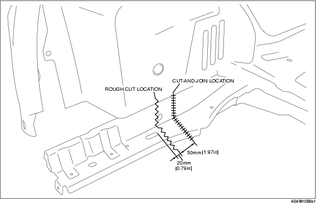

REAR SIDE FRAME (PARTIAL CUTTING) REMOVAL
id098008608100
Caution
• Only the procedure for the left side is described. The shape for the right side is different.
1. Rough cut and remove the damaged part of the rear side frame.
